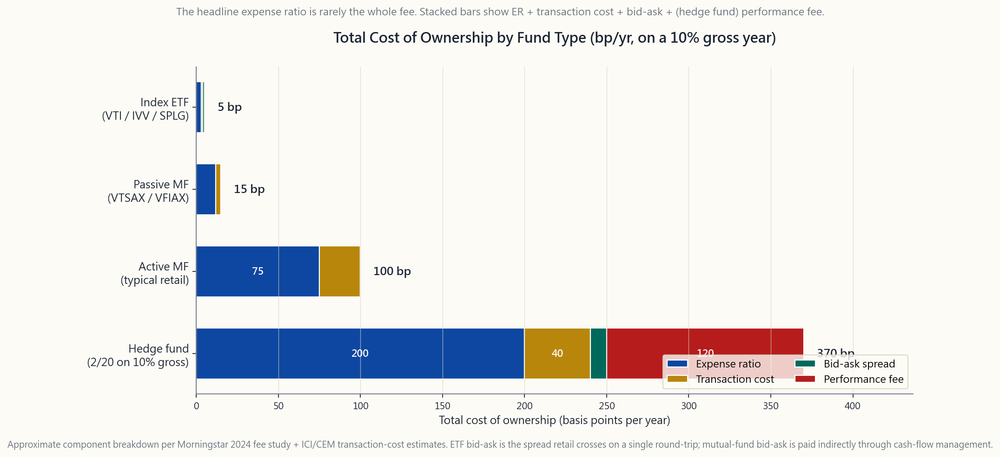
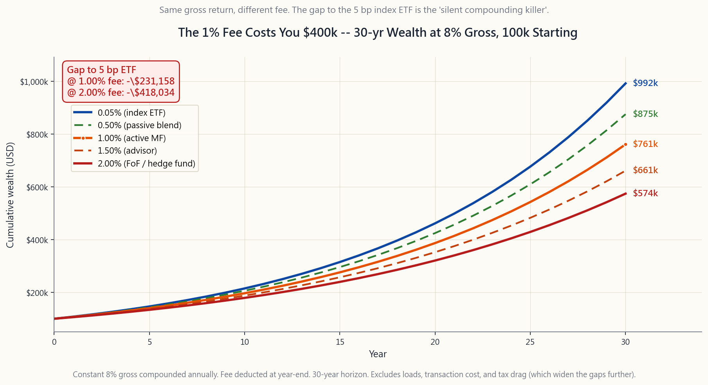

Side Lesson 08: Fund Fees -- The Silent Compounding Killer
1. Why This Is Important
Every other variable in investing -- returns, inflation, recessions, elections, geopolitics -- is somebody else's problem. You do not get to set the equity premium. You do not get to choose the inflation print. The fee on the fund you hold is the one number on the page that you set, every year, by what you choose to buy. Horace's first rule says alpha is rare and the default is passive. The corollary nobody draws often enough is: *if alpha is rare, then the fee you pay had better be tiny, because there is essentially nothing on the other side of the ledger paying for it.*
Four reasons this side lesson is worth ten minutes of your life:
to a $100,000 starting balance growing at 8% gross, costs you about $400,000 in real terminal wealth versus a 5 bp index ETF. Not 4%. Not 10%. About *forty percent of your terminal wealth* eaten by what looks like a small percentage. The fee does not compound linearly. It compounds *as a leak in the compounder itself*, and the loss grows geometrically with time.
Morningstar has run this study every year since 2010 and the answer is always the same: across every category and every horizon, the cheapest quintile beats the most expensive quintile by roughly the fee gap. Past performance is noise; expense ratio is signal. Bogle was right about this in 1976 and it has only become more true as active alpha has compressed (Week 43 covered SPIVA in detail -- 75-90% of active funds underperform over five-plus years).
distribution fees (still 25 bp on many retail share classes), front-end and deferred sales loads (up to 5.75% A-share, 5% CDSC B-share), trading costs inside the fund (10-50 bp/yr for active funds with 80% turnover), and bid-ask spreads on the underlying. The "0.65% expense ratio" can be a 1.2-1.5% total cost of ownership once you stack everything that is actually coming out of your NAV.
ways.** Target-date funds at the same retirement date can charge 0.08% (Vanguard 2050) or 0.75% (Fidelity Freedom 2050) for portfolios that are 80% the same passive ETFs underneath. Fund-of-funds and "managed account" wrappers double-charge -- the wrapper takes a fee, and *every fund inside the wrapper takes a fee on top of that*, sometimes producing 1.5-2% all-in on a portfolio whose underlying is 4 bp index ETFs. Hedge funds take 2/20 -- 2% management plus 20% of profit -- and capture roughly half of gross alpha to fees over long horizons.
This is not a moral lesson. It is arithmetic. The compounder runs either way; the fee just decides whose pocket the compounding ends up in. Make sure it is yours.
2. What You Need to Know
2.1 The Cost of Ownership Stack
Take any fund. Pull the prospectus. Add these line items.
Expense ratio (ER). The headline annual fee, expressed as a percentage of NAV. Charged daily by accruing 1/365 of the rate. This is the only fee Morningstar reports prominently and the only fee most retail investors think about. Index ETFs are 3-10 bp. Index mutual funds are 4-15 bp. Active mutual funds average 0.42% as of 2024 Morningstar data, asset-weighted (the unweighted average across all share classes is closer to 0.85%). Active ETFs run 35-50 bp median. Hedge funds quote 2%. Liquid alternatives 1.0-1.5%.
12b-1 fees. A separate annual marketing/distribution fee, up to 1% of NAV (capped by FINRA at 0.75% distribution + 0.25% service). Mostly attached to retail share classes (A, B, C) of mutual funds where they fund broker commissions. Vanguard, Fidelity no-load, and ETFs do not charge 12b-1. The 12b-1 is included in the headline expense ratio so you do not double-count -- but it explains why two share classes of the same fund can charge 0.50% versus 1.50%: the difference is the kickback to the selling broker.
Loads. Front-end (A-share, up to 5.75% paid at purchase) and deferred (B-share / CDSC, up to 5% declining-over-time on redemption) sales charges. These are one-time fees but on a per-trade basis they wreck the math. A 5.75% front load is the equivalent of paying six full years of 1% expense ratio the moment you buy. No-load funds (most Vanguard, Fidelity, Schwab) have no load.
Transaction costs inside the fund. Every time the fund's manager buys or sells, the fund pays commissions, market impact, and bid-ask spreads on the underlying. Transaction costs are not included in the expense ratio -- they show up as a separate "acquired fund fees and expenses" line and as drag on NAV. For an active US large-cap fund with 80% annual turnover, transaction costs typically run 15-30 bp/yr; for an active small-cap or EM fund with 60-100% turnover, 30-60 bp/yr. Index funds with 3-5% annual turnover run under 5 bp.
Bid-ask cost when you trade the wrapper itself. For ETFs, the spread you cross when you buy or sell -- typically 1-2 bp on megacap US-equity ETFs, 5-15 bp on bond and EM ETFs. Mutual funds do not have a visible bid-ask but they pay one indirectly through cash-flow management.
Cash drag. Active funds typically hold 2-5% in cash for redemption flow. At a 5% market premium that is 10-25 bp/yr of opportunity cost.
Performance fees. Hedge funds: 20% of gains above a hurdle (usually with a high-water mark). On a 10% gross return that is another 200 bp annual drag. Some retail mutual funds have copied this structure with smaller numbers.
The sum -- the total cost of ownership -- is what actually comes out of your terminal wealth. Index ETFs sit at roughly 4-6 bp all-in. Passive mutual funds at 12-20 bp. Active mutual funds at 70-110 bp. Hedge funds at 350-450 bp on a 10% gross year. Those gaps are not in the prospectus headline. They are in the math.

2.2 Why a 1% Fee Costs You $400,000
The arithmetic is unforgiving and worth memorising.
Start with $100,000 at age 30. Assume the gross market return is 8% per year for 30 years (close to the long-run real US equity return). Pay no fees. You retire with $1,006,000.
Now pay 5 bp -- the price of VTI, IVV, SPLG, or any flagship index ETF. Net 7.95%. You retire with $987,000. The fee cost you $19,000 over 30 years on a $100,000 stake. Trivial.
Now pay 1.0% -- the price of a typical retail-channel actively managed mutual fund, before transaction costs and loads. Net 7.0%. You retire with $761,000. The fee cost you $245,000 versus the no-fee baseline, and **$226,000 versus the 5 bp index ETF**. Bump it to a 1.0% extra fee on top of a 5 bp baseline (so 1.05% total) and the gap to the 5 bp index ETF is closer to $400,000 in nominal dollars over the full 30 years.
Push to 2.0% -- the all-in cost of a fund-of-funds wrapper or a hedge fund's management fee. Net 6.0%. You retire with $574,000. The fee took $432,000, or 43% of your terminal wealth, on a $100,000 stake.
The pattern is the gap widens with time. At 10 years a 1% fee costs you about 9% of terminal wealth. At 20 years, 17%. At 30 years, 23%. At 50 years, 35%. The fee drag is not a constant percentage; it compounds against you exactly the way returns compound for you.
This is the John Bogle math. He published variants of this table in every speech he gave for forty years. The conclusion never changed: **across a working life, fees are the single largest controllable lever on your terminal wealth**. The market does what it does. You decide what you pay.

2.3 Hidden Fees and the Wrapper Doubling Trap
The expense ratio you see on the fund page is rarely the whole fee. Three places fees hide.
Fund-of-funds. A fund-of-funds (FoF) holds other funds. The FoF charges a wrapper fee (commonly 0.25-1.00%). Each underlying fund inside the FoF charges its own expense ratio. By SEC rule, the FoF must disclose an "acquired fund fees and expenses" (AFFE) line, but most retail investors never read past the headline. Result: a 0.50% wrapper holding 1% active mutual funds all-in is paying 1.50% total but the marketing material talks about the 0.50%. Many "balanced" robo-advisor offerings, target risk products, and bank-channel managed accounts work this way.
Target-date funds. The single best example of identical products at radically different prices. Target-date funds for retirement around 2050:
- Vanguard Target Retirement 2050 (VFIFX): 0.08%
- Schwab Target 2050: 0.08%
- Fidelity Freedom Index 2050: 0.12%
- Fidelity Freedom 2050 (active version): 0.75%
- John Hancock Multimanager 2050: 1.09%
- T. Rowe Price Retirement 2050: 0.71%
12b-1 and revenue sharing. The mutual-fund retail-broker channel pays an average 25-50 bp annually in 12b-1 fees and "revenue sharing" arrangements that make sure the broker selling you the fund has an incentive to sell that fund instead of a cheaper one. This is why an "advisor" who takes a 1% AUM fee may also recommend funds that pay them another 25-50 bp on the back end. The total advisor cost is then ~1.5%; the advisor discloses 1%. Read the ADV. Better, fire the advisor and buy the five ETFs in this tutorial.
2.4 Hedge Funds, 2/20, and the Capture Problem
Hedge funds quote 2/20 -- 2% of NAV management fee plus 20% of profits above a hurdle. Performance fees apply with a high-water mark, so once you take a drawdown the manager must re-make the loss before earning the 20% again. Sounds reasonable on paper.
Run the math. A hedge fund that delivers 10% gross before fees on a fund-of-funds platform charges:
- 2% management fee = 200 bp
- 20% performance fee on (10% - hurdle ~4% T-bill) = 20% of 6% =
- Total: 320 bp
The structural problem: **performance fees capture the upside but do not refund the downside.** Take a fund that goes +30%, -10%, +30%, -10% (geo-mean ~7%). Investor pays 20% of 30% gain in years 1 and 3 (12% total), pays 2%/yr management (8% total over 4y). Investor's net experience after 4 years is closer to flat than the fund's 7% geo-mean gross. The 2/20 structure is a tax on volatility itself.
Academic studies (Ang, Rhodes-Kropf, Frazzini-Lamont; CEM Benchmarking) have measured the fee capture: across 1995-2020 hedge-fund universes, **fees absorbed roughly 50-65% of gross alpha**. The investor kept 35-50% of what the manager generated. This is the kind of math the alpha-is-rare rule was written about: alpha is rare, and even when it exists, the fee structure leaves so little for the LP that the LP's after-fee, after-tax outcome is indistinguishable from a 60/40 indexed portfolio.
3. Common Misconceptions
Misconception 1: "1% is a small fee." It is not. On a 30-year horizon at 8% gross it costs you about 23% of your terminal wealth. Your gross return is 8%; your net is 7%; the fee is *one eighth of your gross return*, every year, forever.
**Misconception 2: "Higher-fee funds must deliver better results or nobody would buy them."** Survivorship and distribution explain almost all of it. Funds sold through advised channels (broker, bank, insurance agent) pay distribution fees and commissions out of the expense ratio. The investor is not paying for skill; they are paying for shelf space and a sales force.
Misconception 3: "Past performance justifies the fee." Past performance does not predict future performance (Week 43, SPIVA persistence study). Expense ratio does predict future performance, with a roughly 1:1 ratio: every 1% of fee costs about 1% of return.
**Misconception 4: "Hedge funds are worth 2/20 because they deliver alpha."** Net of 2/20, the average hedge fund has underperformed a 60/40 index portfolio since 2009, by HFRI's own data. There are individual hedge funds with persistent net alpha (a small handful, mostly closed). The category is not.
Misconception 5: "Target-date funds are all the same." They are not. Vanguard 2050 at 0.08% and Fidelity Freedom 2050 at 0.75% hold roughly the same passive exposures. The 67 bp gap is pure fee. Read your 401(k)'s lineup and pick the cheap one.
Misconception 6: "ETFs are always cheaper than mutual funds." Index ETFs are usually cheaper than retail-channel index mutual funds. But Vanguard's institutional-share index mutual funds (VTSAX, VFIAX) match their ETF cousins (VTI, VOO) at 4-5 bp. Inside Vanguard the wrapper choice is a tax-location decision (Side 03), not a fee one.
**Misconception 7: "I can pick a 1% mutual fund that beats indexes."** SPIVA: 75-90% of active funds underperform their index over 5+ years. The set of survivors is roughly what you would expect from luck. You are not going to identify the top decile in advance with confidence (Week 43, Week 45).
**Misconception 8: "12b-1 fees fund the fund's research and operations."* No. They fund distribution* -- broker commissions and shelf-space payments. The fund's research and operations are paid by the management fee proper. 12b-1 is a sales-channel subsidy you pay to be sold to.
Misconception 9: "A fee less than 1% is fine." If your benchmark is the 0.03% IVV/VOO/SPLG total-market index ETF, a 1% fee is roughly 30x your alternative. You are buying $0.97 of IVV with extra steps and slightly worse tax efficiency. Anchor on the cheap option, not on the high-fee historical norm.
**Misconception 10: "Fund-of-funds give me diversification I cannot get directly."** Most fund-of-funds hold 8-15 underlying funds you could buy directly with no wrapper fee. The "diversification" is real; the wrapper fee is not earning it. Build the portfolio yourself.
4. Q&A Section
Q1: Where do I find the actual total cost of owning a fund?
A: Three places. (1) The prospectus "Annual Fund Operating Expenses" table -- this gives you the expense ratio plus 12b-1 plus AFFE (acquired fund fees) for fund-of-funds. (2) The Form N-CSR or N-Q filings show portfolio turnover -- divide by 100, multiply by 0.4 to estimate transaction cost in bp. (3) Morningstar's "tax cost ratio" estimates the after-tax drag in percentage points. Add ER + AFFE + transaction cost + (if taxable) tax-cost ratio = total cost of ownership.
Q2: What is the "right" fee to pay for a US-equity fund?
A: For passive total-market exposure, 5 bp or less -- VTI, ITOT, SPLG, IVV, SCHB. Anything above 10 bp for plain US-equity beta is overpaying. For factor or sector exposure, 10-25 bp is reasonable (AVUV, MTUM, USMV). For an actively managed fund you believe in, the fee should be no more than 50-75 bp, and you should have a defensible reason -- track record, manager specialty, capacity-constrained strategy -- not just "my advisor said so."
Q3: Are bond fund fees as important as equity fund fees?
A: Yes, more so in the current rate environment. Bond gross returns are 4-5% nominal; a 0.50% fee is 10-12% of your gross return. For equities at 8% gross, 0.50% is 6%. Bond funds should be cheaper than equity funds because their gross is smaller and the fee is a bigger share. BND, AGG, SGOV are all under 10 bp. A 0.50% bond fund is paying for distribution, not management.
Q4: My 401(k) only offers expensive funds. What do I do?
A: Three choices. (1) Use only the cheapest option in each asset class (often a target-date or S&P 500 index). (2) After leaving the employer, roll the 401(k) to an IRA at Vanguard, Schwab, or Fidelity where you have access to 5 bp ETFs. (3) Contribute enough for the match, then put excess into a taxable brokerage with cheap ETFs. Capture the match first; the match is bigger than the fee gap.
Q5: How do hedge funds get away with 2/20?
A: Two answers. The legitimate one: a small minority of hedge funds run truly capacity-constrained strategies (volatility arbitrage, statistical arbitrage, certain illiquid event-driven strategies) where they earn their fees and their funds are closed. The illegitimate one: the rest sell on track record, prestige, "access," and the institutional consultant industry that recommends them. The latter is roughly 90% of the dollars.
Q6: Are ETFs always tax-efficient regardless of fee?
A: Index ETFs with in-kind redemption are structurally tax-efficient (Side 03 covered the mechanism). High-yield bond ETFs and active income ETFs (JEPI, JEPQ, QYLD) distribute ordinary income that is taxed annually at your marginal rate, which can dwarf the expense ratio. The wrapper is tax-efficient on the capital gain side, not the income side. Income-oriented funds belong in tax-advantaged accounts (Side 04, Week 36).
Q7: What about target-date funds in a 401(k)?
A: Default to the cheapest target-date fund available. Vanguard Target Retirement (~0.08%), Schwab Target (~0.08%), or Fidelity Freedom Index (~0.12%) are all fine defaults. Avoid the active versions ("Fidelity Freedom 2050" without the word "Index" is 0.75%; the index version is 0.12%). The naming is deliberately confusing.
Q8: How do I compare advisor fees to fund fees?
A: Add them. A 1% AUM advisor who picks 0.65% active funds is charging you 1.65% all-in, plus likely 25-50 bp of fund 12b-1 revenue-sharing they may not refund. Total: ~2%. Over 30 years on a $500k portfolio, that is roughly **$700,000 of foregone wealth** versus a self-built 5 bp index portfolio. The advisor needs to deliver $700k of services, behavioural coaching, or tax alpha to break even. Most do not.
Q9: Are zero-fee funds (Fidelity ZERO funds) a free lunch?
A: Almost. Fidelity ZERO funds (FZROX, FNILX) charge 0.00% expense ratio. The catches: (1) they use proprietary indices (not the standard CRSP, Russell, or S&P licensed indices) so they have slight tracking differences, (2) they are *only available in Fidelity accounts* and do not transfer to other brokerages in-kind. For a long-term hold inside Fidelity, fine. If you might consolidate at another broker later, choose FXAIX (3 bp) or FSKAX (1.5 bp) instead, which transfer freely.
Q10: What is the single most important fee insight?
A: Anchor on the cheap option, not the expensive one. The market trains you to think a 0.65% active mutual fund is "normal" because that is what your 401(k) defaults you into. The actual baseline is 5 basis points -- the price of a flagship US-equity index ETF. Every 10 bp above that has to be earning its keep, either through specialty exposure, factor tilt, or a defensible alpha thesis. Alpha is rare. The corollary: fee above 10 bp needs a reason, and "my broker recommended it" is not a reason.
附加課 08：基金費用——複利的無聲殺手
1. 為何此課題至關重要
投資中的其他所有變數——回報、通脹、經濟衰退、選舉、地緣政治——都是別人的事。你無法決定股票風險溢價，無法左右通脹數據。你持有的基金費用，是頁面上唯一由你每年透過選擇買什麼來親自決定的數字。陳馬的第一條法則說：阿爾法稀有，預設選擇是被動管理。隨之而來卻鮮少有人點明的推論是：既然阿爾法稀有，你支付的費用就必須極低，因為幾乎沒有任何東西在賬本的另一邊為它買單。
此附加課值得你花十分鐘的四個理由：
這不是道德說教，而是算術。複利機器無論如何都在運轉；費用只是決定了複利最終進入誰的口袋。確保那個人是你。
2. 你需要掌握的知識
2.1 持有成本疊加
取任何一隻基金，翻開其招股說明書，將以下各項相加。
開支比率。 以資產淨值百分比表示的標題年費，每日按1/365的比率計提。這是晨星重點披露的唯一費用，也是大多數零售投資者唯一考慮的費用。指數交易所買賣基金為3至10個基點，指數互惠基金為4至15個基點。根據2024年晨星數據，主動管理互惠基金的資產加權平均為0.42%（所有份額類別的簡單平均值接近0.85%）。主動管理交易所買賣基金中位數為35至50個基點，對沖基金報價2%，流動性另類基金為1.0%至1.5%。
12b-1費用。 獨立的年度市場推廣╱分銷費，最高為資產淨值的1%（FINRA上限為0.75%分銷費加0.25%服務費）。主要附加於互惠基金的零售份額類別（A、B、C類），用於支付經紀佣金。領航、富達免佣基金及交易所買賣基金不收取12b-1費。12b-1費用已包含在標題開支比率中，故無需重複計算——但這解釋了為何同一基金的兩個份額類別收費分別為0.50%和1.50%：差距正是付給銷售經紀的回扣。
銷售佣金。 前端（A類份額，購買時最高支付5.75%）及遞延（B類份額╱CDSC，贖回時最高5%並隨時間遞減）銷售費用。這些是一次性費用，但從單次交易計算，足以破壞整體數學邏輯。5.75%的前端佣金相當於你在買入的瞬間，一次過預付了六年的1%開支比率。免佣基金（大多數領航、富達、嘉信理財）不收取銷售佣金。
基金內部交易成本。 每當基金經理買賣持倉，基金就須支付佣金、市場衝擊成本及底層持倉的買賣差價。交易成本不計入開支比率，而是體現為獨立的「獲取基金費用及開支」（AFFE）項目，並以資產淨值拖累形式呈現。對於換手率80%的美國大型股主動基金，交易成本通常為每年15至30個基點；換手率60%至100%的主動小型股或新興市場基金為30至60個基點。換手率3%至5%的指數基金則低於5個基點。
買賣包裝產品時的差價成本。 對於交易所買賣基金，即你買賣時跨越的差價——美國大型股交易所買賣基金通常為1至2個基點，債券及新興市場交易所買賣基金為5至15個基點。互惠基金沒有可見的買賣差價，但透過現金流管理間接承擔。
現金拖累。 主動基金通常持有2%至5%現金用於應對贖回。以5%的市場超額回報計算，每年機會成本為10至25個基點。
表現費。 對沖基金：超越基準回報的收益中收取20%（通常設有高水位標記）。以10%毛回報計算，額外拖累約200個基點。部分零售互惠基金已複製此結構，但數字較小。
以上總和——即全部持有成本——才是真正從你終值財富中扣除的部分。指數交易所買賣基金的全部成本約為4至6個基點；被動互惠基金約為12至20個基點；主動管理互惠基金約為70至110個基點；對沖基金在10%毛回報年份約為350至450個基點。這些差距並不在招股說明書的標題上，而在數學計算裡。
2.2 為何1%費用令你損失40萬美元
這個算術冷酷無情，值得熟記。
假設你30歲時擁有10萬美元，以8%的年毛回報率投資30年（接近美國股市長期實際回報）。不支付任何費用，退休時你將擁有100萬6千美元。
現在支付5個基點——即VTI、IVV、SPLG或任何旗艦指數交易所買賣基金的費用。淨回報7.95%，退休時擁有98萬7千美元。30年費用合計令你損失1萬9千美元。微不足道。
現在支付1.0%——即典型零售渠道主動管理互惠基金的費用，尚未計入交易成本和銷售佣金。淨回報7.0%，退休時擁有76萬1千美元。費用令你較零費用基準損失24萬5千美元，較5個基點指數交易所買賣基金損失22萬6千美元。若在5個基點基準之上再加收1.0%額外費用（即總費用1.05%），與5個基點指數交易所買賣基金的差距在名義上接近40萬美元。
若費用提升至2.0%——即基金中的基金包裝產品或對沖基金管理費的全部成本，淨回報6.0%，退休時擁有57萬4千美元。費用吞噬了43萬2千美元，即以10萬美元本金計算，終值財富的43%。
規律在於差距隨時間擴大。10年後，1%費用令你損失終值財富的約9%；20年後損失17%；30年後損失23%；50年後損失35%。費用拖累並非固定百分比，而是以與回報複利完全相同的方式，以複利形式對你造成打擊。
這正是約翰·博格爾的數學。他在四十年的每次演講中都引用此表格的不同版本，結論從未改變：在一個工作生涯中，費用是影響終值財富唯一最大的可控槓桿。 市場自有其走勢，你決定支付多少。
2.3 隱藏費用與包裝產品雙重收費陷阱
你在基金頁面所見的開支比率，鮮少是完整費用。費用藏匿於三個地方。
基金中的基金。 基金中的基金持有其他基金。它收取包裝層費用（通常為0.25%至1.00%），而旗下每隻基金各自再收取自身的開支比率。根據美國證監會規定，基金中的基金須披露「獲取基金費用及開支」（AFFE）項目，但大多數零售投資者從未讀到標題之後。結果是：持有1%主動互惠基金的0.50%包裝產品，全部費用為1.50%，但市場推廣材料只談0.50%。許多「平衡型」智能投顧產品、目標風險產品及銀行渠道管理賬戶均採用此模式。
目標日期基金。 完全相同的產品，收費卻截然不同，這是最佳例子。2050年前後退休的目標日期基金：
- 領航目標退休2050（VFIFX）：0.08%
- 嘉信理財目標2050：0.08%
- 富達自由指數2050：0.12%
- 富達自由2050（主動版本）：0.75%
- 宏利多元管理2050：1.09%
- 普信退休2050：0.71%
12b-1費用及收入分成。 互惠基金零售經紀渠道每年支付平均25至50個基點的12b-1費用及「收入分成」安排，確保向你銷售基金的經紀有動機推薦那隻基金而非更便宜的替代品。這就是為何收取1%資產管理費的「投資顧問」，同時可能推薦向其支付另外25至50個基點後端費用的基金。顧問的總費用實為約1.5%，但顧問披露的是1%。請閱讀ADV表格，或更好的做法：解僱顧問，購買本教程中的五隻交易所買賣基金。
2.4 對沖基金、2/20與費用截留問題
對沖基金的報價為2/20——2%資產淨值管理費加上超越基準回報部分的20%利潤分成。表現費附帶高水位標記，即基金虧損後必須先彌補損失，方可再收取20%。紙面上聽起來合理。
讓我們算一下。一隻在基金中的基金平台上取得10%毛回報的對沖基金收取：
- 2%管理費 = 200個基點
- 超越基準（10% - 約4%國債基準）的20%表現費 = 20%乘以6% = 120個基點
- 合計：320個基點
結構性問題：表現費截留上行收益，卻不退還下行損失。 設想一隻基金走勢為+30%、-10%、+30%、-10%（幾何平均約7%）。投資者在第1年及第3年分別支付30%收益的20%（合計12%），加上4年共8%管理費。投資者4年後的淨體驗，比基金7%的毛幾何平均更接近原地踏步。2/20結構本質上是對波動性本身徵稅。
學術研究（Ang、Rhodes-Kropf、Frazzini-Lamont；CEM Benchmarking）對費用截留進行了量化：在1995至2020年的對沖基金數據中，費用約吸收了毛阿爾法的50%至65%。投資者只保留了經理所創造價值的35%至50%。這正是阿爾法稀有法則的數學依據：阿爾法稀有，而即使阿爾法存在，費用結構留給有限合夥人的亦如此之少，以至於有限合夥人的稅後淨回報與一個60/40指數化投資組合毫無區別。
3. 常見誤解
誤解一：「1%是小費用。」 並非如此。以30年期限、8%毛回報計算，它令你損失約23%的終值財富。你的毛回報是8%；淨回報是7%；費用是你毛回報的八分之一，每年，永久如此。
誤解二：「高費用基金必定帶來更好的表現，否則不會有人買。」 生存偏差和分銷機制幾乎能解釋一切。透過建議渠道（經紀、銀行、保險代理）銷售的基金，從開支比率中支付分銷費和佣金。投資者為技巧買單，實際上卻在為貨架空間和銷售隊伍買單。
誤解三：「過往表現證明費用合理。」 過往表現不能預測未來表現（第43週，SPIVA持續性研究）。開支比率確實能預測未來表現，比例約為1:1——每1%費用，回報大約損失1%。
誤解四：「對沖基金憑藉阿爾法值得收取2/20。」 扣除2/20後，根據HFRI自身數據，自2009年以來，對沖基金整體跑輸60/40指數化投資組合。確有個別對沖基金具有持續的淨阿爾法（少數幾個，大多已關閉外部認購）。但整個類別並非如此。
誤解五：「目標日期基金都是一樣的。」 並非如此。0.08%的領航2050與0.75%的富達自由2050持有幾乎相同的被動持倉，67個基點的差距純屬費用。請翻閱你的強積金╱401(k)投資選項，選擇最便宜的那隻。
誤解六：「交易所買賣基金永遠比互惠基金便宜。」 指數交易所買賣基金通常比零售渠道指數互惠基金便宜。但領航的機構份額指數互惠基金（VTSAX、VFIAX）與其交易所買賣基金（VTI、VOO）同樣收取4至5個基點。在領航體系內，包裝產品的選擇是稅務安排決策（附加課03），而非費用決策。
誤解七：「我能挑選出跑贏指數的1%主動互惠基金。」 SPIVA數據：75%至90%的主動基金在五年或以上的時間跨度中跑輸所屬指數。倖存者的構成大致符合隨機運氣的預期。你無法提前可靠地識別出頂尖十分位（第43週、第45週）。
誤解八：「12b-1費用資助基金的研究和運營。」 並非如此，它們資助的是分銷——經紀佣金和貨架空間費用。基金的研究和運營由正式管理費支付。12b-1是你為被推銷而支付的銷售渠道補貼。
誤解九：「低於1%的費用是可接受的。」 若你的基準是0.03%的IVV╱VOO╱SPLG整體市場指數交易所買賣基金，1%費用大約是替代品的30倍。你只是多走了幾步購買了0.97%的IVV，而且稅務效率略差。應以最廉宜的選擇為錨，而非以歷史上的高費用規範為標準。
誤解十：「基金中的基金提供我無法直接獲得的分散投資。」 大多數基金中的基金持有8至15隻你可以直接購買、無需包裝費的底層基金。「分散投資」是真實的，但包裝費並未賺回其成本。你完全可以自行構建投資組合。
4. 問答環節
問題一：如何找到持有某基金的實際全部成本？
答：三個來源。（1）招股說明書中的「年度基金運營費用」表——涵蓋開支比率加12b-1費用，以及基金中的基金的AFFE項目。（2）Form N-CSR或N-Q申報文件顯示投資組合換手率——除以100再乘以0.4，估算基點形式的交易成本。（3）晨星的「稅務成本比率」以百分點估算稅後拖累。開支比率 + AFFE + 交易成本 + （如屬應稅賬戶）稅務成本比率 = 全部持有成本。
問題二：美國股票基金的「合理」費用是多少？
答：對於被動整體市場持倉，5個基點或以下——VTI、ITOT、SPLG、IVV、SCHB。超過10個基點的普通美國股票貝塔敞口均屬溢價支付。因子或行業持倉，10至25個基點屬合理（AVUV、MTUM、USMV）。對於你確實認可的主動管理基金，費用不應超過50至75個基點，且你應有充分理由——業績記錄、經理專長、容量受限策略——而非僅憑「我的顧問說好」。
問題三：債券基金費用是否與股票基金費用同樣重要？
答：是的，在當前利率環境下更為重要。債券名義毛回報為4%至5%；0.50%費用佔毛回報的10%至12%。股票以8%毛回報計算，0.50%佔6%。債券基金應比股票基金更便宜，因為其毛回報較低，費用佔比更大。BND、AGG、SGOV均低於10個基點。0.50%的債券基金所支付的是分銷成本，而非管理服務。
問題四：我的強積金╱401(k)只提供昂貴基金，怎麼辦？
答：三個選擇。（1）在每個資產類別中只選用最便宜的選項（通常是目標日期基金或標準普爾500指數基金）。（2）離職後，將賬戶轉入領航、嘉信理財或富達的個人退休賬戶，即可使用5個基點的交易所買賣基金。（3）先供款至取得僱主配對，再將多餘資金存入擁有廉宜交易所買賣基金的應稅證券賬戶。優先取得配對；配對回報遠大於費用差距。
問題五：對沖基金如何在2/20下生存？
答：兩個答案。合理的那個：少數對沖基金確實經營真正受容量限制的策略（波動性套利、統計套利、某些非流動性事件驅動策略），確實賺回了費用，且其基金已關閉外部認購。不合理的那個：其餘約90%的資金靠業績記錄、聲譽、「尊貴渠道」，以及推薦它們的機構顧問行業銷售。
問題六：交易所買賣基金是否無論費用高低都具有稅務效率？
答：採用實物贖回機制的指數交易所買賣基金，在結構上具有稅務效率（附加課03詳述其機制）。高收益債券交易所買賣基金及主動收益型交易所買賣基金（JEPI、JEPQ、QYLD）每年分派普通收入，按你的邊際稅率課稅，其稅務成本可遠超開支比率。包裝產品在資本增值方面具稅務效率，但在收入方面並非如此。收益導向基金應持有於稅務優惠賬戶中（附加課04、第36週）。
問題七：強積金╱401(k)中的目標日期基金怎麼看？
答：默認選擇最便宜的目標日期基金。領航目標退休（約0.08%）、嘉信理財目標（約0.08%）或富達自由指數（約0.12%）均屬合適的默認選項。避免主動版本（「富達自由2050」不帶「指數」字樣的版本為0.75%；指數版本為0.12%）。命名方式故意令人混淆。
問題八：如何比較顧問費與基金費用？
答：應相加計算。一位收取1%資產管理費、並選購0.65%主動基金的顧問，全部費用為1.65%，加上基金12b-1收入分成可能的25至50個基點（顧問可能不會退還），總計約2%。以50萬美元投資組合計算，30年後這個費用與自行構建5個基點指數投資組合相比，約造成70萬美元的財富損失。顧問須透過服務、行為輔導或稅務阿爾法交付70萬美元的價值，才能打平成本。大多數顧問做不到。
問題九：零費用基金（富達ZERO基金）是免費午餐嗎？
答：幾乎算是。富達ZERO基金（FZROX、FNILX）收取0.00%開支比率。但有幾點注意：（1）它們使用專有指數（非標準的CRSP、羅素或標準普爾授權指數），故存在輕微追蹤誤差；（2）它們只可在富達賬戶內使用，無法以實物形式轉至其他券商。如長期持有於富達賬戶中，問題不大。若日後考慮轉移至其他券商，宜選擇FXAIX（3個基點）或FSKAX（1.5個基點），兩者可自由轉移。
問題十：關於費用最重要的一個洞見是什麼？
答：以最廉宜的選擇為錨，而非以昂貴的選擇為錨。市場訓練你認為0.65%的主動互惠基金是「正常」的，因為那正是你的強積金╱401(k)默認為你選擇的。實際基準是5個基點——旗艦美國股票指數交易所買賣基金的價格。超出10個基點的每一分錢都必須賺回其成本，無論是透過專項持倉、因子傾斜，還是有據可查的阿爾法論點。阿爾法稀有，推論隨之而來：超過10個基點的費用需要理由，「我的經紀推薦」不算理由。
番外課 08：基金費用——複利的隱形殺手
1. 為什麼這很重要
投資中的其他變數——報酬、通膨、經濟衰退、選舉、地緣政治——都不是你能掌控的。你無法決定股權風險溢酬，也無法選擇通膨數字。你持有的基金費用，才是那張清單上唯一一個由你每年自行決定的數字——取決於你選擇買什麼。陳馬的第一法則說，阿爾法稀少，預設應選被動式管理。而鮮少有人點明的推論是：既然阿爾法稀少，你支付的費用就必須壓得極低，因為帳本的另一邊幾乎沒有任何東西能彌補它。
以下四個理由，說明這堂番外課值得你花十分鐘：
這不是道德說教，而是算術。複利機器無論如何都在運轉；費用只是決定複利最終流進誰的口袋。請確保那個口袋是你的。
2. 你需要知道的事
2.1 持有成本結構
拿任何一檔基金，翻開公開說明書，把以下項目逐一加總。
費用率（ER）。 標示的年費，以淨值百分比表示，每日按 1/365 的比例提列。這是晨星最顯眼揭露的唯一費用，也是多數零售投資人唯一在意的費用。指數股票型基金為 3–10 bp，指數型共同基金為 4–15 bp。根據晨星 2024 年資產加權數據，主動式共同基金平均為 0.42%（若以所有份額級別的簡單平均計算，則接近 0.85%）。主動式指數股票型基金中位數為 35–50 bp，避險基金報價 2%，流動性另類投資為 1.0%–1.5%。
12b-1 費用。 額外的年度行銷／銷售費，最高可達淨值的 1%（受 FINRA 限制：銷售費上限 0.75%，服務費上限 0.25%）。主要附加於共同基金零售份額級別（A、B、C 類），用以支付券商佣金。Vanguard、Fidelity 免手續費基金及指數股票型基金均不收取 12b-1。12b-1 費用已包含在標示的費用率中，因此無需重複計算——但這解釋了為何同一檔基金的兩種份額級別費用率分別為 0.50% 與 1.50%：差額即為支付銷售券商的回佣。
手續費。 前收（A 類股，購買時最高收取 5.75%）與遞延（B 類股／CDSC，贖回時最高 5%，隨時間遞減）銷售費。這些是一次性費用，但就單筆交易而言足以破壞數學邏輯。5.75% 的前收手續費，等同於在買入的當下就預繳了六整年 1% 費用率的費用。免手續費基金（多數 Vanguard、Fidelity、Schwab）無需支付。
基金內部交易成本。 基金經理人每次買賣，基金就要承擔佣金、市場衝擊成本及持倉標的的買賣價差。交易成本不包含在費用率中——它們以「已取得基金費用及費用」（AFFE）的獨立項目呈現，並拖累淨值。換手率 80% 的主動式美國大型股基金，交易成本通常每年 15–30 bp；換手率 60%–100% 的主動式小型股或新興市場基金則為 30–60 bp。換手率 3%–5% 的指數基金則低於 5 bp。
交易包裝本身的買賣價差成本。 對於指數股票型基金，是你買賣時跨越的價差——美國大型股指數股票型基金通常為 1–2 bp，債券與新興市場指數股票型基金為 5–15 bp。共同基金沒有明顯的買賣價差，但透過現金流管理間接承擔。
現金拖累。 主動式基金通常持有 2%–5% 的現金以應付贖回需求。若市場溢酬為 5%，則每年造成約 10–25 bp 的機會成本。
績效費。 避險基金：超過門檻報酬（通常含高水位線）的獲利中抽取 20%。若毛報酬為 10%，則再增加約 200 bp 的年度拖累。部分零售共同基金已複製此結構，但比例較小。
上述費用總和——持有總成本——才是真正從你終值財富中扣除的金額。指數股票型基金全部費用約為 4–6 bp，被動式共同基金約 12–20 bp，主動式共同基金約 70–110 bp，避險基金在毛報酬 10% 的年度約 350–450 bp。這些差距不在公開說明書標題上，而在數學裡。
2.2 為何 1% 的費用讓你損失 $400,000
這個算術毫不留情，值得熟記。
假設 30 歲時有 $100,000，毛報酬每年 8%（接近美國股市長期實質報酬），投資 30 年，完全不收費，退休時財富為 $1,006,000。
支付 5 bp——VTI、IVV、SPLG 或任何旗艦指數股票型基金的費用。淨報酬 7.95%，退休財富為 $987,000。三十年間費用共吃掉 $19,000。微乎其微。
支付 1.0%——零售通路主動式共同基金的典型費用，尚未計入交易成本與手續費。淨報酬 7.0%，退休財富為 $761,000。費用相較零費用基準吃掉 $245,000，相較 5 bp 指數股票型基金吃掉 $226,000。若在 5 bp 基礎上多付 1.0%（共 1.05%），與 5 bp 指數股票型基金的差距在名目金額上接近 $400,000。
提高到 2.0%——組合型基金包裝或避險基金管理費的全部費用。淨報酬 6.0%，退休財富為 $574,000。費用吞噬了 $432,000，即 $100,000 本金最終財富的 43%。
規律是差距隨時間不斷擴大。10 年後，1% 費用約侵蝕終值財富的 9%；20 年後為 17%；30 年後為 23%；50 年後為 35%。費用拖累並非固定百分比；它正好以與報酬複利的相同方式，反向對你複利。
這是約翰·柏格的數學。他在四十年的每次演講中都以不同版本呈現這張表。結論從未改變：在一個完整職涯中，費用是你終值財富上唯一最大的可控槓桿。 市場自有其運作方式；你只能決定你支付多少。
2.3 隱藏費用與包裝雙重收費陷阱
基金頁面上顯示的費用率，很少是完整的費用。費用藏匿於三個地方。
組合型基金。 組合型基金持有其他基金。外層基金收取包裝費（通常 0.25%–1.00%），內層每一檔基金再各自收取費用率。依 SEC 規定，組合型基金必須揭露「已取得基金費用及費用」（AFFE）項目，但多數零售投資人從未讀到標題以後。結果：一個收取 0.50% 包裝費、持有費用率 1% 主動式共同基金的組合型基金，實際上支付的是 1.50% 的總費用，但行銷材料只談 0.50%。許多「平衡型」智能理財（robo-advisor）產品、目標風險商品與銀行通路託管帳戶都採用這種模式。
目標日期基金。 這是相同產品以截然不同價格販售的最佳範例。退休年份約 2050 年的目標日期基金：
- Vanguard Target Retirement 2050（VFIFX）：0.08%
- Schwab Target 2050：0.08%
- Fidelity Freedom Index 2050：0.12%
- Fidelity Freedom 2050（主動版）：0.75%
- John Hancock Multimanager 2050：1.09%
- T. Rowe Price Retirement 2050：0.71%
12b-1 費用與收益分成。 共同基金零售券商通路每年平均支付 25–50 bp 的 12b-1 費用與「收益分成」安排，確保向你銷售基金的券商有誘因推薦那一檔基金，而非更便宜的替代品。這就是為何收取 1% 資產管理費的「理財顧問」，同時可能推薦額外支付他們 25–50 bp 回佣的基金。顧問的實際總費用因此達到約 1.5%，但顧問對外揭露的是 1%。請詳閱 ADV 表格。更好的做法是辭退顧問，自己買本教程中介紹的五檔指數股票型基金。
2.4 避險基金、2/20 與費用捕獲問題
避險基金報價 2/20——2% 的資產管理費加上超過門檻報酬部分 20% 的績效費。績效費附帶高水位線機制，因此一旦出現虧損，須先彌補損失才能再收取 20% 分成。聽起來合情合理。
實際算一下。若一檔組合型基金平台上的避險基金，費前毛報酬為 10%：
- 2% 管理費 = 200 bp
- 績效費（10% - 約 4% 國庫券門檻）的 20% = 6% 的 20% = 120 bp
- 合計：320 bp
結構性問題在於：績效費分享上行，卻不補償下行。 假設基金依序報酬 +30%、-10%、+30%、-10%（幾何平均約 7%）。投資人在第 1 年與第 3 年各支付 30% 獲利的 20%（合計 12%），加上每年 2% 的管理費（四年合計 8%）。投資人四年後的淨體驗，比基金 7% 的毛幾何平均報酬接近持平。2/20 結構本質上是對波動性本身課稅。
學術研究（Ang、Rhodes-Kropf、Frazzini-Lamont；CEM Benchmarking）量化了費用捕獲比例：在 1995–2020 年避險基金全域中，費用大約吸走毛阿爾法的 50%–65%，投資人僅保留了基金經理所創造價值的 35%–50%。這正是「阿爾法稀少」法則背後的算術：阿爾法稀少，即便存在，費用結構留給有限合夥人的實在太少，以至於有限合夥人費後、稅後的投資結果，與持有 60/40 指數投資組合幾乎難以區分。
3. 常見誤解
誤解一：「1% 是很小的費用。」 並不小。在 30 年、毛報酬 8% 的條件下，它大約侵蝕你 23% 的終值財富。你的毛報酬是 8%；淨報酬是 7%；費用是你毛報酬的八分之一，年復一年，永無止境。
誤解二：「高費用基金必定績效較好，否則沒人買。」 這幾乎完全由倖存者偏差與銷售通路決定。透過顧問通路（券商、銀行、保險業務員）銷售的基金，從費用率中支付銷售費與佣金。投資人支付的不是技能的代價，而是上架費與銷售人力的代價。
誤解三：「過去績效可以為費用背書。」 過去績效無法預測未來績效（第 43 週，SPIVA 持續性研究）。費用率可以預測未來績效，比率大約為 1:1：每 1% 的費用，大約使報酬減少 1%。
誤解四：「避險基金收 2/20 是因為它們能創造阿爾法。」 根據 HFRI 自身數據，2009 年以來，扣除 2/20 費用後，平均避險基金的表現落後 60/40 指數投資組合。確實有少數避險基金能持續創造費後淨阿爾法，但那只是極少數，且多半已不接受外部資金。整體類別並不如此。
誤解五：「目標日期基金都一樣。」 並不一樣。費用 0.08% 的 Vanguard 2050 與費用 0.75% 的 Fidelity Freedom 2050 持有大致相同的被動式部位。67 bp 的差距純粹是費用。請詳閱你的 401(k) 基金菜單，選擇費用最低的那一檔。
誤解六：「指數股票型基金永遠比共同基金便宜。」 指數股票型基金通常比零售通路指數型共同基金便宜。但 Vanguard 的機構級指數型共同基金（VTSAX、VFIAX）與其指數股票型基金（VTI、VOO）費用相同，均為 4–5 bp。在 Vanguard 體系內，包裝選擇是稅務配置決策（番外課 03），而非費用決策。
誤解七：「我可以挑選一檔費用 1% 但能擊敗指數的共同基金。」 SPIVA 數據：超過五年以上，75%–90% 的主動式基金跑輸其基準指數。倖存的基金，其績效大致符合純靠運氣的預期。你無法事先有把握地識別頂端十分位的基金（第 43 週、第 45 週）。
誤解八：「12b-1 費用用於支付基金的研究與營運。」 不是。它支付的是銷售——券商佣金與通路上架費。基金的研究與營運由管理費本身支付。12b-1 是一筆你為了被人推銷而支付的銷售通路補貼。
誤解九：「低於 1% 的費用就可以接受。」 若你的基準是 0.03% 的 IVV/VOO/SPLG 全市場指數股票型基金，那 1% 的費用大約是替代方案的 30 倍。你等於花更複雜的方式、略差的稅務效率，購買 $0.97 的 IVV。請以低費用選項為錨點，而非以高費用的歷史常態為錨點。
誤解十：「組合型基金提供我自己無法達成的分散投資。」 多數組合型基金持有 8–15 檔你可以直接買入的底層基金，無需支付任何包裝費。「分散投資」的效果確實存在；但包裝費並未為此創造額外價值。自己建構投資組合即可。
4. 問答專區
問題一：哪裡可以找到基金的實際持有總成本？
答：三個地方。（1）公開說明書的「年度基金營運費用」表——包含費用率、12b-1 費用，以及組合型基金的已取得基金費用（AFFE）。（2）Form N-CSR 或 N-Q 申報文件顯示投資組合換手率——除以 100，再乘以 0.4，可估算出以 bp 為單位的交易成本。（3）晨星的「稅務成本比率」估算稅後拖累（以百分點計）。將費用率 + AFFE + 交易成本 + （若為應稅帳戶）稅務成本比率加總，即為持有總成本。
問題二：美國股票基金的「合理」費用是多少？
答：若為被動式全市場曝險，5 bp 或以下——VTI、ITOT、SPLG、IVV、SCHB 均符合。單純美國股票貝塔曝險若超過 10 bp，即屬超付。因子或產業曝險則 10–25 bp 合理（AVUV、MTUM、USMV）。若你真心認同某一檔主動式基金，費用不應超過 50–75 bp，且你必須有可辯護的理由——業績紀錄、基金經理專長、容量受限策略——而非「我的顧問說不錯」。
問題三：債券基金的費用和股票基金一樣重要嗎？
答：是的，在當前利率環境下更為重要。債券名目毛報酬為 4%–5%；0.50% 的費用佔毛報酬的 10%–12%。股票毛報酬為 8% 時，0.50% 費用僅佔 6%。債券基金的費用應低於股票基金，因為其毛報酬較小，費用佔比更大。BND、AGG、SGOV 均低於 10 bp。0.50% 的債券基金是在為銷售通路付費，而非為管理能力付費。
問題四：我的 401(k) 只提供高費用基金。我該怎麼辦？
答：三種選擇。（1）在每個資產類別中只選擇最便宜的選項（通常是目標日期基金或標準普爾 500 指數基金）。（2）離職後，將 401(k) 轉入 Vanguard、Schwab 或 Fidelity 的個人退休帳戶，即可取得 5 bp 指數股票型基金。（3）先提撥足以獲得雇主相對提撥的金額，超過部分投入可購買低費用指數股票型基金的應稅券商帳戶。雇主配額優先——配額的價值遠大於費用差距。
問題五：避險基金憑什麼收 2/20？
答：兩種答案。合理的那種：極少數避險基金確實執行真正受容量限制的策略（波動性套利、統計套利、特定非流動性事件驅動策略），足以賺回費用，且其基金早已停止對外募資。不合理的那種：其餘基金依靠業績紀錄、名聲、「進入門檻」以及推薦它們的機構投資顧問產業來銷售。後者佔整體資產規模的約 90%。
問題六：指數股票型基金無論費用高低都具有稅務效率嗎？
答：採用實物交換贖回機制的指數股票型基金，在結構上具有稅務效率（番外課 03 介紹了其機制）。但高收益債券指數股票型基金與主動式收益型指數股票型基金（JEPI、JEPQ、QYLD）每年按你的邊際稅率分配一般所得，其稅務拖累可能遠超費用率。包裝在資本利得方面具有稅務效率，在收益方面則否。收益型基金應放入稅優帳戶（番外課 04、第 36 週）。
問題七：401(k) 中的目標日期基金怎麼選？
答：預設選擇可用選項中費用最低的目標日期基金。Vanguard Target Retirement（約 0.08%）、Schwab Target（約 0.08%）或 Fidelity Freedom Index（約 0.12%）皆是合適的預設選擇。避開主動版本（Fidelity Freedom 2050 名稱中不含「Index」的版本費用為 0.75%；含「Index」的版本為 0.12%）。命名方式刻意令人混淆。
問題八：如何將顧問費與基金費用進行比較？
答：加總計算。一位收取 1% 資產管理費、挑選費用率 0.65% 主動式基金的顧問，全部費用合計達 1.65%，加上基金 12b-1 收益分成可能額外增加 25–50 bp，且顧問未必退還。合計：約 2%。以 $500,000 本金計算，30 年後相較自建 5 bp 指數投資組合，約損失 $700,000 的財富。顧問必須以服務、行為教練或稅務阿爾法提供價值超過 $700,000，才能打平。多數顧問做不到。
問題九：零費用基金（Fidelity ZERO 系列）是免費午餐嗎？
答：幾乎是。Fidelity ZERO 系列基金（FZROX、FNILX）費用率 0.00%。注意事項：（1）它們使用自有指數（非標準的 CRSP、羅素或標準普爾授權指數），因此存在些微追蹤差異；（2）它們僅在 Fidelity 帳戶中可用，且無法實物轉移至其他券商。若計劃在 Fidelity 長期持有，沒有問題。若日後可能整合至其他券商，請選擇可自由轉移的 FXAIX（3 bp）或 FSKAX（1.5 bp）。
問題十：關於費用，最重要的一個洞見是什麼？
答：以低費用選項為錨點，而非以高費用選項為錨點。市場讓你誤以為 0.65% 的主動式共同基金是「正常」，因為這是你 401(k) 的預設選項。真正的基準是 5 個基點——旗艦美國股票指數股票型基金的價格。超過這個水準的每 10 bp，都必須物有所值——無論是特定曝險、因子傾斜，還是可辯護的阿爾法論點。阿爾法稀少。推論是：超過 10 bp 的費用需要理由，而「我的券商推薦」不是理由。
附加课08：基金费用——复利的无声杀手
1. 为何这至关重要
投资中的其他所有变量——收益、通胀、经济衰退、选举、地缘政治——都不在你的掌控之中。股权溢价不由你决定。通胀数据不由你选择。而你持有基金的费用，是这份清单上唯一一个你每年都能通过选择买什么来亲自设定的数字。陳馬的第一原则指出：阿尔法稀缺，默认策略是被动管理。其推论鲜有人明确点破：既然阿尔法稀缺，你支付的费用就必须极低，因为账本的另一边几乎没有任何东西能抵消它。
以下四个原因足以说明这节附加课值得你花上十分钟：
这不是一堂道德课，而是算术课。复利的引擎无论如何都在运转；费用不过是决定了复利的果实最终落入谁的口袋。请确保那个口袋是你的。
2. 你需要掌握的内容
2.1 总持有成本的构成层级
拿起任何一只基金，调出招募说明书，将以下各项逐一累加。
费用率（ER）。 以净值百分比表示的年度头条费用。通过每日计提1/365的比例进行收取。这是晨星重点披露的唯一费用，也是大多数零售投资者唯一关注的费用。指数式交易所交易基金为3至10个基点。指数型共同基金为4至15个基点。据2024年晨星数据，主动型共同基金的资产加权平均费用率为0.42%（按所有份额类别未加权平均则接近0.85%）。主动型交易所交易基金中位数为35至50个基点。对冲基金报价2%。流动性另类投资工具为1.0%至1.5%。
12b-1费用。 一项独立的年度营销/分销费用，最高可达净值的1%（金融业监管局上限为0.75%分销费加0.25%服务费）。主要附加于共同基金零售份额类别（A、B、C类），用于支付券商佣金。先锋、富达免佣基金及交易所交易基金均不收取12b-1费用。12b-1费用已包含在头条费用率中，因此无需重复计算——但这解释了为何同一基金的两类份额费率分别为0.50%和1.50%：差额即是向销售券商的回扣。
销售佣金。 前端佣金（A类份额，申购时最高5.75%）和递延佣金（B类份额/CDSC，赎回时最高5%，按年递减）。这些属于一次性费用，但从单笔交易的角度来看，对数学结果的破坏相当严重。5.75%的前端佣金等同于在你买入的瞬间，一次性支付了六年的1%年费用率。免佣基金（先锋、富达、嘉信理财的大部分产品）不收取销售佣金。
基金内部交易成本。 每当基金经理买卖资产，基金就要承担佣金、市场冲击成本以及标的资产的买卖价差。交易成本不包含在费用率内——它们以独立的"所获基金费用及开支"（AFFE）项目呈现，并以净值拖累的形式反映。对于换手率80%的主动型美国大盘股基金，交易成本通常为每年15至30个基点；对于换手率60%至100%的主动型小盘股或新兴市场基金，则为30至60个基点。换手率仅3%至5%的指数基金可将交易成本控制在5个基点以内。
交易包装本身的买卖价差成本。 对于交易所交易基金，即你买入或卖出时所跨越的价差——巨型美国股票交易所交易基金通常为1至2个基点，债券及新兴市场交易所交易基金为5至15个基点。共同基金没有可见的买卖价差，但会通过现金流管理间接承担。
现金拖累。 主动型基金通常持有2%至5%的现金以应对赎回。以5%的市场风险溢价计算，这意味着每年10至25个基点的机会成本。
业绩提成。 对冲基金：超过门槛收益率的利润的20%（通常附带高水位标记）。若总收益率为10%，这又额外带来200个基点的年度拖累。部分零售共同基金也以较小幅度复制了这一结构。
以上总和——总持有成本——才是真正从你的最终财富中扣除的数额。指数式交易所交易基金综合成本约为4至6个基点。被动型共同基金约为12至20个基点。主动型共同基金约为70至110个基点。对冲基金在10%总收益年份约为350至450个基点。这些差距不在招募说明书的头条数字里，它们在数学里。
2.2 为何1%的费用让你损失$400,000
这套算术毫不留情，值得牢记于心。
假设你30岁时以$100,000起步。假设市场总收益率为每年8%，持续30年（接近美国股市的长期实际收益率）。不支付任何费用。退休时你将拥有$1,006,000。
现在支付5个基点——VTI、IVV、SPLG或任何旗舰指数式交易所交易基金的价格。净收益率7.95%。退休时你将拥有$987,000。费用在30年内造成了$19,000的损失。微不足道。
现在支付1.0%——在零售渠道主动管理型共同基金的典型价格，不计交易成本和销售佣金。净收益率7.0%。退休时你将拥有$761,000。与零费用基准相比，费用造成了$245,000的损失，与5个基点的指数式交易所交易基金相比损失了$226,000。若在5个基点基准之上叠加1.0%的额外费用（合计1.05%），则与5个基点的指数式交易所交易基金的差距在名义金额上接近$400,000。
若推至2.0%——基金中的基金包装或对冲基金管理费的综合成本。净收益率6.0%。退休时你将拥有$574,000。费用吞噬了$432,000，相当于在$100,000本金上损失了43%的最终财富。
规律是：差距随时间扩大。10年后，1%的费用大约消耗你9%的最终财富；20年后消耗17%；30年后消耗23%；50年后消耗35%。费用拖累并非固定比例；它对你产生的损害，与收益对你的积累，遵循完全相同的复利规律。
这是约翰·博格尔的数学。他在过去四十年的每一次演讲中都展示过这张表格的各种版本，结论从未改变：在整个职业生涯中，费用是影响你最终财富唯一可控的最大杠杆。 市场自有其走向，而你决定你支付多少。
2.3 隐性费用与包装双重收费陷阱
你在基金页面上看到的费用率，鲜少是持有该基金的全部成本。费用藏匿于三个地方。
基金中的基金。 基金中的基金（FoF）持有其他基金。基金中的基金收取一笔包装费（通常为0.25%至1.00%）。其内部持有的每只基金再收取各自的费用率。根据美国证券交易委员会规定，基金中的基金须披露"所获基金费用及开支"（AFFE）一项，但大多数零售投资者从未读到这一行。结果是：一个0.50%包装层持有费用率1%的主动型共同基金，综合成本实为1.50%，但营销材料只谈那0.50%。许多"平衡型"智能投顾产品、目标风险产品以及银行渠道托管账户均采用这种运作方式。
目标日期基金。 以下是同质产品之间存在天壤之别定价的最佳案例。2050年前后退休的目标日期基金：
- 先锋目标退休2050年基金（VFIFX）：0.08%
- 嘉信理财目标2050年：0.08%
- 富达自由指数2050年：0.12%
- 富达自由2050年（主动版本）：0.75%
- 约翰汉考克多管理人2050年：1.09%
- T. Rowe Price 退休2050年：0.71%
12b-1费用与收入共享安排。 共同基金零售券商渠道每年平均通过12b-1费用和"收入共享"安排支付25至50个基点，以确保向你销售基金的券商有动力向你推销那只基金，而非更便宜的替代品。这就是为什么一个收取1%资产管理费的"顾问"，同时还可能推荐能给他带来25至50个基点后端回扣的基金。总顾问成本因此达到约1.5%，而顾问只披露1%。请仔细阅读ADV表格。更好的办法是：解雇那位顾问，自己买本教程中的五只交易所交易基金。
2.4 对冲基金、2/20与利润截留问题
对冲基金报价2/20——净值的2%管理费加上超额门槛收益部分的20%业绩提成。业绩提成附有高水位标记，因此一旦发生回撤，基金经理须先弥补亏损，方可再次收取20%提成。听起来似乎合情合理。
运算一下。一只在基金中的基金平台上实现10%总收益率的对冲基金收取：
- 2%管理费 = 200个基点
- 20%业绩提成，以（10% - 约4%国债门槛收益率）为基数 = 20% × 6% = 120个基点
- 合计：320个基点
结构性问题在于：业绩提成捕获上行收益，却不退还下行损失。 假设一只基金的收益序列为：+30%、-10%、+30%、-10%（几何平均约7%）。投资者在第1年和第3年分别支付30%收益的20%提成（合计12%），再加上4年共8%的管理费。投资者4年后的净收益体验接近于持平，而非该基金7%的总收益几何平均。2/20结构本质上是对波动性本身征税。
学术研究（Ang、Rhodes-Kropf、Frazzini-Lamont及CEM Benchmarking）已对费用截留进行了量化：在1995至2020年的对冲基金全域中，费用大约吸收了总阿尔法的50%至65%。投资者仅保留了基金经理所创造价值的35%至50%。这正是"阿尔法稀缺"原则的写照：阿尔法本已稀缺，即便存在，费用结构也使有限合伙人税后所得与一个60/40指数化投资组合的结果无从区分。
3. 常见误解
误解一："1%只是一笔很小的费用。" 并非如此。在30年期限、8%总收益率的假设下，它会消耗你约23%的最终财富。你的总收益率是8%；净收益率是7%；费用相当于你总收益的八分之一，年年如此，永无止境。
误解二："收费更高的基金一定能带来更好的回报，否则不会有人购买。" 这几乎完全可以用幸存者偏差和分销机制来解释。通过有顾问渠道（券商、银行、保险代理）销售的基金，会从费用率中支付分销费和佣金。投资者支付的不是专业能力的报酬，而是货架陈列位和销售团队的成本。
误解三："过往业绩可以证明费用的合理性。" 过往业绩无法预测未来业绩（第43周SPIVA持续性研究）。费用率确实能预测未来业绩，且比例约为1:1——每1%的费用大约消耗约1%的收益。
误解四："对冲基金凭借阿尔法值得收取2/20。" 扣除2/20之后，据HFRI自身数据，自2009年以来，对冲基金平均表现落后于60/40指数化投资组合。确实存在具有持续净阿尔法的个别对冲基金（极少数，大多已关闭外部认购）。整个类别则不然。
误解五："目标日期基金大同小异。" 并非如此。先锋2050年基金费用率0.08%，富达自由2050年基金费用率0.75%，两者持有的被动敞口大致相同。67个基点的差距纯属费用。请仔细查阅你的401(k)基金菜单，选择那只最便宜的。
误解六："交易所交易基金总是比共同基金便宜。" 指数式交易所交易基金通常比零售渠道的指数型共同基金便宜。但先锋机构级指数型共同基金（VTSAX、VFIAX）与其交易所交易基金同类产品（VTI、VOO）费用率同为4至5个基点。在先锋内部，产品形式的选择是税务归位决策（附加课03），而非费用决策。
误解七："我能挑选出一只费用率1%却能跑赢指数的共同基金。" SPIVA数据显示：75%至90%的主动基金在五年以上周期内跑输基准指数。幸存者的分布大致符合纯运气的预期。你无法事先有把握地识别出顶级十分位的基金（第43周、第45周）。
误解八："12b-1费用用于资助基金的研究和运营。" 不对。它资助的是分销——券商佣金和货架陈列位。基金的研究和运营由管理费本身支付。12b-1是你为被销售给某个渠道所付出的代价。
误解九："费用低于1%就没问题。" 如果你的参照基准是0.03%的IVV/VOO/SPLG全市场指数式交易所交易基金，那么1%的费用大约是替代选项的30倍。你其实是在多走弯路地以略低的税务效率购买着$0.97份额的IVV。请以低费用选项为锚，而非以历史上高收费的行业惯例为锚。
误解十："基金中的基金能给我带来自己无法直接获得的分散投资效果。" 大多数基金中的基金持有的8至15只底层基金，你完全可以直接购买，无需支付任何包装费。"分散投资"的效果确实存在；但包装费无法赚回这笔钱。你完全可以自己构建这个投资组合。
4. 问答环节
问题一：在哪里可以找到持有一只基金的实际总成本？
答：三个地方。（1）招募说明书中的"年度基金运营费用"表格——列出费用率、12b-1费用以及基金中的基金的AFFE（所获基金费用及开支）。（2）SEC N-CSR或N-Q申报文件显示投资组合换手率——除以100，再乘以0.4，即可估算出以基点表示的交易成本。（3）晨星的"税务成本比率"以百分点形式估算税后拖累。将费用率 + AFFE + 交易成本 + （若为应税账户）税务成本比率加总，即得总持有成本。
问题二：持有一只美国股票基金应支付多少费用才算合理？
答：被动式全市场敞口，5个基点或以下——VTI、ITOT、SPLG、IVV、SCHB皆可。对于普通美国股票贝塔敞口，超过10个基点即属多付。因子或板块敞口，10至25个基点属合理范围（AVUV、MTUM、USMV）。对于你确实信赖的主动管理基金，费用率不应超过50至75个基点，且你应有站得住脚的理由——业绩记录、基金经理专长、容量受限策略——而非仅仅"我的顾问推荐的"。
问题三：债券基金费用是否和股票基金费用一样重要？
答：是的，在当前利率环境下更加重要。债券总名义收益率为4%至5%；0.50%的费用占总收益的10%至12%。而股票在8%总收益率下，0.50%仅占6%。债券基金应比股票基金更便宜，因为其总收益较低，费用占比更大。BND、AGG、SGOV均在10个基点以下。0.50%的债券基金收费，支付的是分销成本，而非管理成本。
问题四：我的401(k)只提供高费用基金，该怎么办？
答：三个选择。（1）在每个资产类别中仅使用最便宜的选项（通常是目标日期基金或标准普尔500指数基金）。（2）离职后，将401(k)转存至先锋、嘉信理财或富达的个人退休账户（IRA），以获取5个基点的交易所交易基金。（3）先贡献足以获得雇主匹配的金额，然后将超额部分投入持有低费用交易所交易基金的应税券商账户。优先获取雇主匹配；匹配收益远大于费用差距。
问题五：对冲基金如何维持2/20的收费？
答：两个答案。合理的那个：少数对冲基金确实运营着真正的容量受限策略（波动率套利、统计套利、某些非流动性事件驱动策略），能够赚回费用，且已关闭对外募集。不合理的那个：其余对冲基金靠业绩记录、声誉、"独家准入"以及推荐它们的机构顾问行业来维持。后者占据了大约90%的资金量。
问题六：无论费用高低，交易所交易基金始终具有税务效率吗？
答：采用实物赎回机制的指数式交易所交易基金在结构上具有税务效率（附加课03已介绍该机制）。但高收益债券交易所交易基金和主动收益型交易所交易基金（JEPI、JEPQ、QYLD）分配普通收入，须按你的边际税率每年纳税，其税务成本可能远超费用率。这类产品的税务效率体现在资本利得端，而非收入端。以收益为导向的基金应放在税收优惠账户中持有（附加课04、第36周）。
问题七：401(k)中应如何选择目标日期基金？
答：默认选择可用选项中最便宜的目标日期基金。先锋目标退休系列（约0.08%）、嘉信理财目标系列（约0.08%）或富达自由指数系列（约0.12%）均是合适的默认选项。避免选择主动管理版本（富达自由2050年若名称中没有"指数"字样，费用率为0.75%；指数版本为0.12%）。命名故意令人迷惑。
问题八：如何将顾问费用与基金费用进行比较？
答：两者相加即可。一个收取1%资产管理费、同时推荐0.65%主动基金的顾问，综合费率为1.65%，加上他可能不予退还的约25至50个基点基金12b-1收入共享。合计约2%。在$500,000投资组合上，30年后与自建5个基点指数投资组合相比，大约会损失$700,000的财富。这位顾问需要通过服务、行为引导或税务阿尔法提供价值$700,000的回报，方能打平成本。大多数顾问做不到。
问题九：零费率基金（富达ZERO系列）是免费的午餐吗？
答：几乎是。富达ZERO系列基金（FZROX、FNILX）费用率0.00%。注意事项如下：（1）它们使用专有指数（而非标准的CRSP、罗素或标准普尔授权指数），因此存在轻微跟踪误差；（2）这些基金仅可在富达账户内使用，无法实物转移至其他券商。若计划在富达长期持有，完全可行。若日后可能转移至其他券商，则应选择FXAIX（3个基点）或FSKAX（1.5个基点），这两只基金均可自由转移。
问题十：关于费用，最重要的一条洞见是什么？
答：以低费用选项为锚，而非以高费用历史惯例为锚。市场会让你以为0.65%的主动型共同基金是"正常"的，因为这正是你401(k)的默认选项。真正的基准是5个基点——旗舰美国股票指数式交易所交易基金的价格。超出这一基准的每10个基点都需要物有所值，无论是专属敞口、因子倾斜，还是站得住脚的阿尔法命题。阿尔法稀缺。推论：超过10个基点的费用需要理由，而"我的券商推荐的"不是理由。